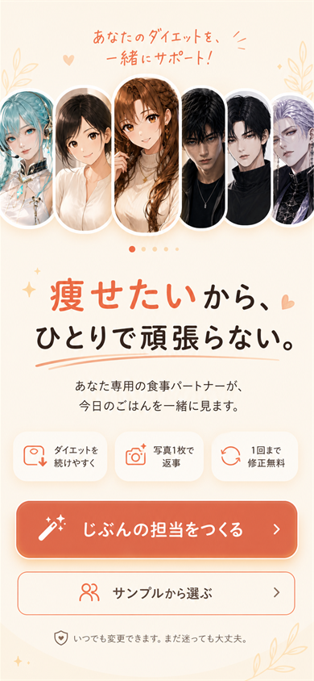
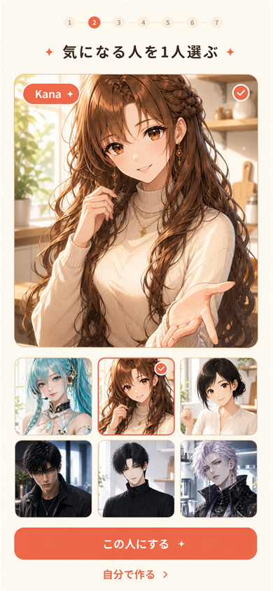
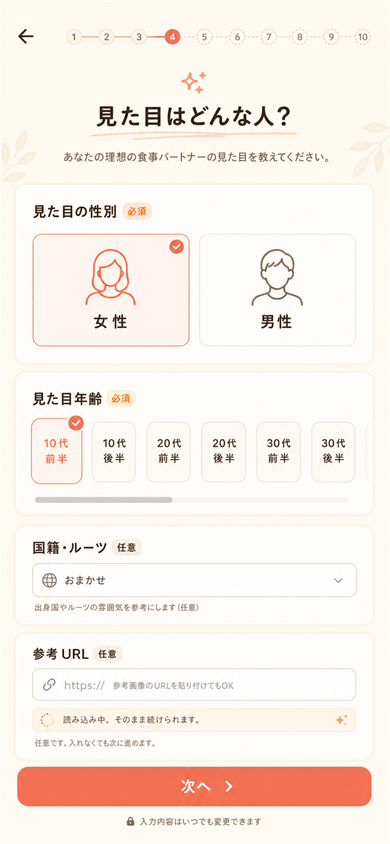
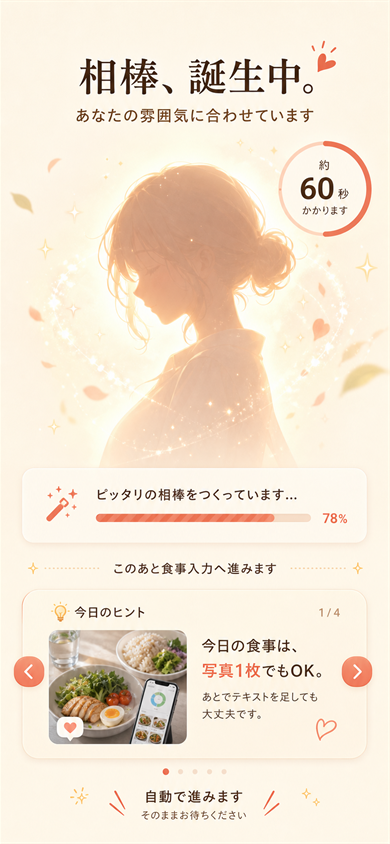
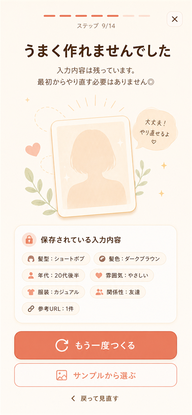
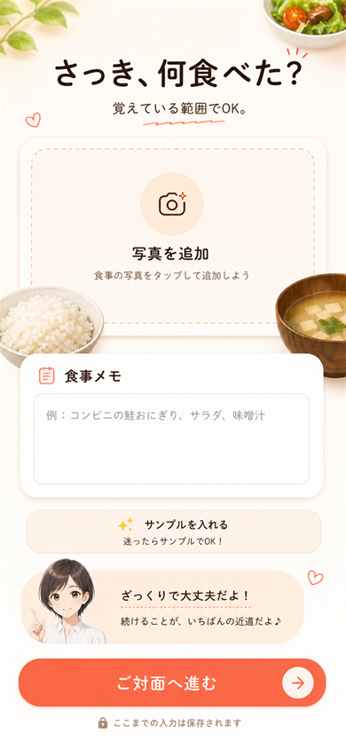
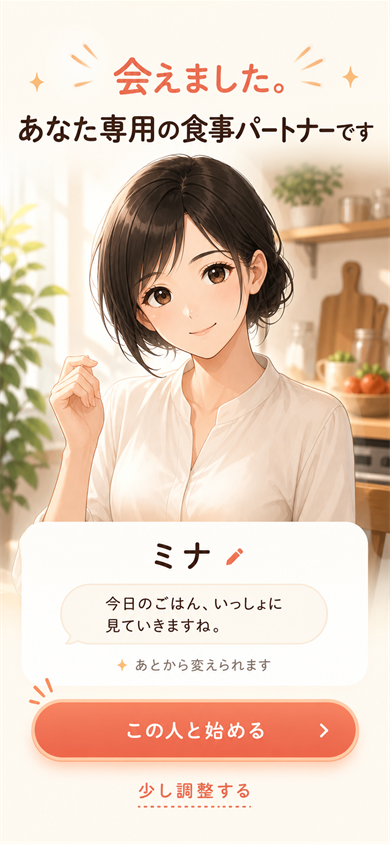
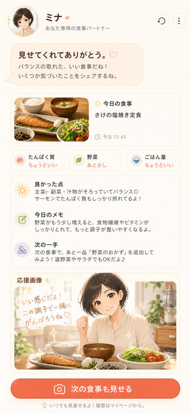
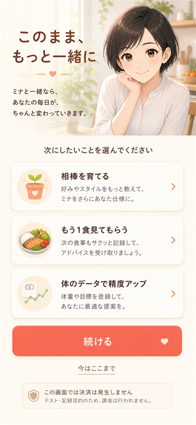

G3-IMG-001
開始・作り方の分岐
SCR-ONB-001

痩せたい目的を前面に出し、担当作成をその手段として見せる。
確認観点「痩せたいから使う」と「自分の担当を作る」が同時に伝わるか。
G3-IMG-002
サンプル選択
SCR-ONB-002

サンプル選択後の画面。気になる人を選び、この人にする。
確認観点SCR-ONB-001でサンプルを選んだ後、迷わず1人を選んで確定できるか。
G3-IMG-003
見た目の基本と参考
SCR-ONB-004

必須と任意が分かり、参考URL/参考画像がなくても進める。
確認観点仕様側では参考URLに加えて任意の参考画像も受ける。項目が重すぎないか。
G3-IMG-004
生成中
SCR-ONB-009

60秒の待ち時間を「あなたのためのパートナーが生まれる時間」にする。
確認観点「あなたのためにパーソナライズして作っている」文脈が伝わるか。
G3-IMG-005
生成できない時
SCR-ONB-009F

入力が残っていて、再試行かサンプルへ逃げられる。
確認観点内部reasonCodeはAPI遅延、混雑、障害、入力/参照画像の不受理、無料枠/予算上限など。ユーザーには入力保持と再試行/サンプル逃げ道を見せる。
G3-IMG-006
初回食事入力
SCR-ONB-012

写真がなくても、覚えている範囲で進める。
確認観点フォーム感が強すぎず、直前の食事を軽く出せるか。
G3-IMG-007
ご対面
SCR-ONB-010

「会えた」感情の山。ここで特別感を出す。
確認観点自分専用の食事パートナーができた感覚があるか。
G3-IMG-008
初回フィードバック
SCR-ONB-013

食事を見てもらえた感覚と、応援画像枠。
確認観点具体的で優しいフィードバックに見えるか。差別化が伝わるか。
G3-IMG-009
仮ペイウォール
SCR-ONB-014

機能解放ではなく、担当との継続として見せる。
確認観点課金前提の圧ではなく、続きを選びたくなるか。